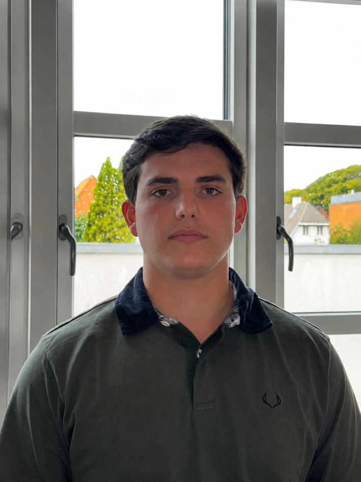

Background
I grew up in Portugal and started my degree in Horsens in autumn 2026. Living in a new country has taught me to be independent and to adapt quickly.

I’m a software engineering student who moved from Portugal to Denmark to learn how to build things people use.
I study Software Technology Engineering at VIA University College in Horsens. I’m aiming for full-stack JavaScript with React and Node, and I’m especially curious about adding AI and large language models to real applications.
I grew up in Portugal and started my degree in Horsens in autumn 2026. Living in a new country has taught me to be independent and to adapt quickly.
HTML and CSS right now, then JavaScript, React and Node. I like learning by building small projects and explaining them to others.
I want a career that gives me freedom in where I live and work, using my degree as a starting point for building useful software.